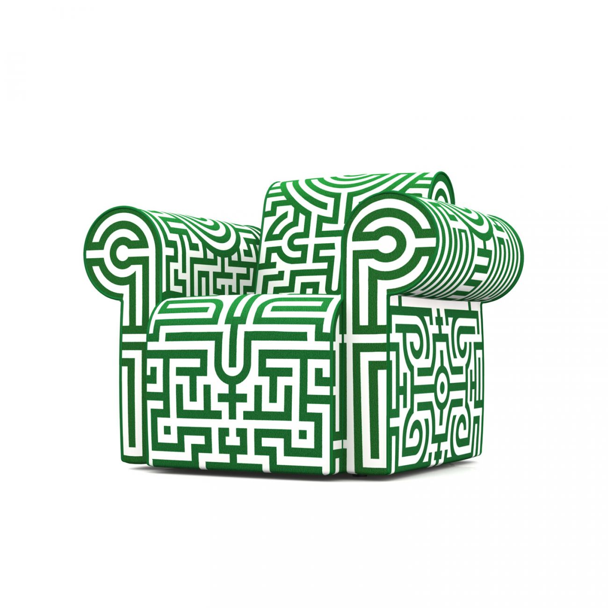

Although in Greek mythology, the Labyrinth was an elaborate structure designed and built by the legendary artificer Daedalus for King Minos of Crete at Knossos. It could also very well be the "inter tubes" of webness, specifically the gihub portal, and even more specifically the DevBootCamp online living and growing curriculum.
Don't get me wrong, I am enjoying the P0 exp so far because it allows me a chance to learn structure , time management. and combing group dynamics with self study. The biggest struggle for me has been partially following directions and often getting lost. Lost in the github weekly pages, lost in the dozens of firefox, safari, and now canary tabs open at the same time, and lost in time when I get stuck with a technical exercise. This constant feeling of being in a labyrinth's of labs, while often dizzying often gives me hope of at least running into David Bowie .
I guess as a concrete random I am a fan of trial random and am learning to adjust my approach on the fly. Every week it seems, I learn something essential about the way I approach things I do not know. In this setting I can work at transparency, and building on strengths and embracing weaknesses (like avoidance and transparency). My plan going forward into unit 2 is to create a routine that has enough wiggle room that my concrete random brain can embrace and thrive without running out of time or running of energy from spinning in circles.